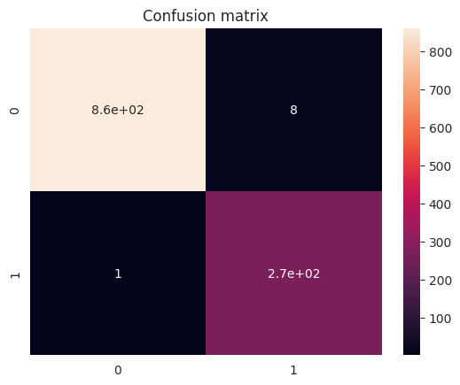

In today's digital world, email spam is a persistent problem that affects individuals and organizations alike. To combat this issue, machine learning techniques, combined with Natural Language Processing (NLP), provide an effective solution for detecting email spam. In this blog, we will explore the working of a program that utilizes these technologies to identify spam emails.
The program begins by importing the necessary libraries, such as NumPy, pandas, scikit-learn, and NLTK, which are essential for data manipulation, machine learning, and NLP tasks. Once the libraries are imported, the program loads the email dataset from a CSV file.
To gain insights into the dataset, the program performs initial exploratory analysis. It displays the first few records of the dataset, provides information about the dataset's structure, and presents statistical summaries. Additionally, the program visualizes the frequency of spam and non-spam emails using a countplot.
Before training the machine learning model, the program performs data cleaning and preprocessing. It checks for missing data and removes any duplicate records. To prepare the text data for analysis, the program defines a function that removes punctuation and stopwords (common words like "and," "the," etc.). This function tokenizes the text into words, which can be further processed.
To convert the processed text data into numerical features, the program uses the CountVectorizer from scikit-learn. This technique converts each email's text into a vector representation by counting the occurrences of words in the text. The resulting numerical features are essential for training the machine learning model.
The program splits the dataset into training and testing sets using the train_test_split function. It then creates a Multinomial Naive Bayes (MNB) model, which is a popular choice for text classification tasks. The model is trained on the training set using the fit() function, where it learns the patterns and characteristics of spam and non-spam emails.
After training the model, it is evaluated using the testing set. The program makes predictions on the testing set using the trained model and calculates the accuracy of the predictions using the accuracy_score function. The program also generates a classification report, providing detailed performance metrics such as precision, recall, and F1-score for both spam and non-spam classes. Furthermore, a confusion matrix is created and visualized using a heatmap, allowing for a better understanding of the model's performance.
In conclusion, email spam detection is a crucial task in ensuring the security and efficiency of email communication. By leveraging machine learning techniques, such as NLP and the Multinomial Naive Bayes algorithm, we can develop effective solutions for detecting spam emails. This blog explored a program that implements these techniques, from data loading and preprocessing to model training and evaluation. With the ability to accurately detect spam, individuals and organizations can enhance email filtering systems, protect sensitive information, and improve overall productivity in the digital landscape.